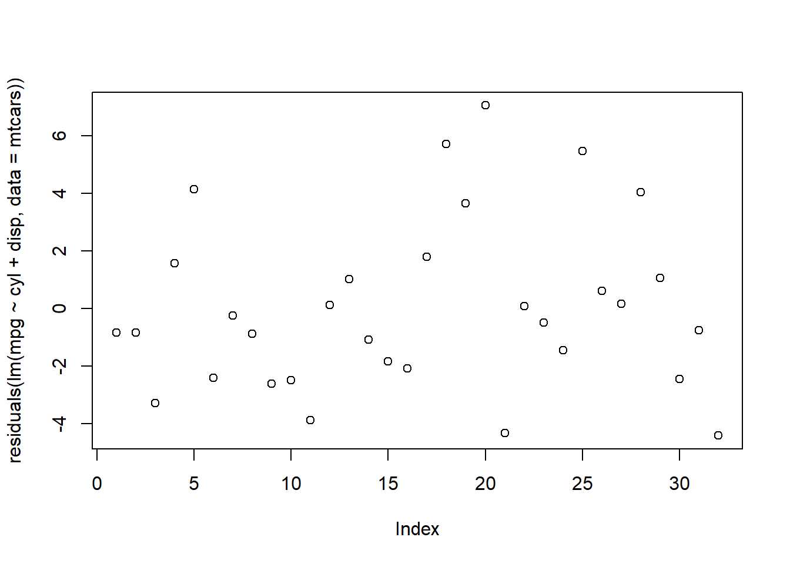
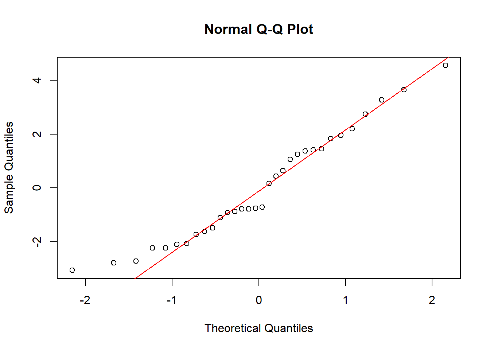
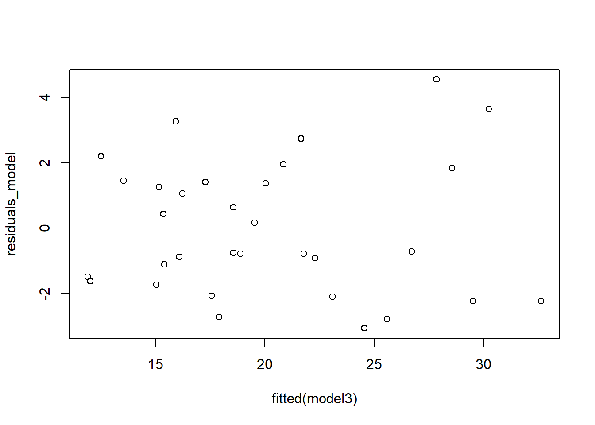
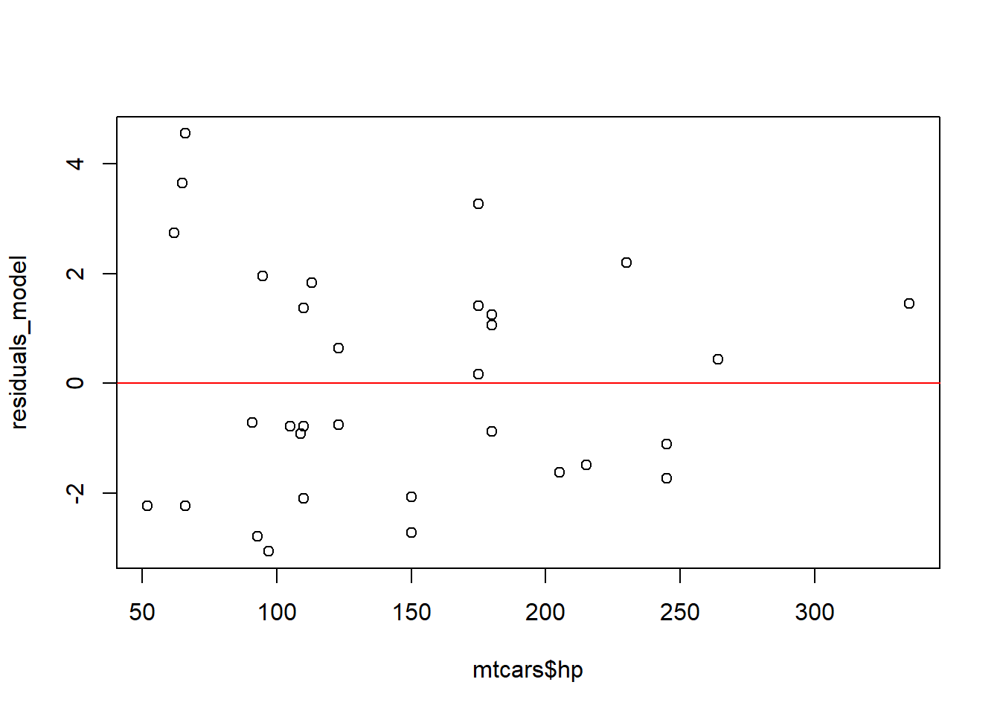
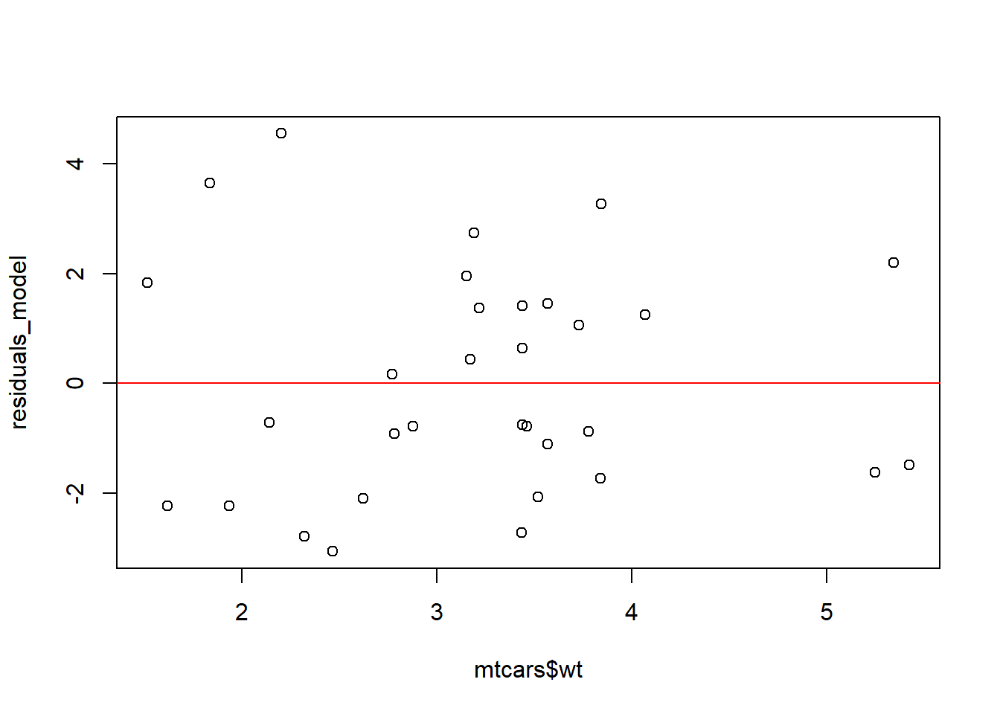

Bab8 Regresi Dengan Rstudio
Salah satu cara untuk menghitung regresi adalah dengan RStudio maka kita bisa menggunakan salah satu perangkat lunak ini untuk membantu menghitung nilai persamaan regresi. secara ringkas adalah pertama menyiapkan data yang akan dilakukan analisis. Kemudian memilih beberapa package yang cocok untuk melakukan analisis ada beberapa contoh package yang dapat seperti lm yang dapat digunakan untuk menduga untuk regresi ada juga ggplot2 untuk grafik dan juga lain-lain. Ada beberapa modul yang dapat digunakan untuk melakukan regresi tersebut. A. Persiapan Sebelum melakukan regresi kita harus menentukan terlebih dahulu yang mana yang menjadi variabel yang kita regresi. KIta harus mengetahui bahwa niat regresi adalah untuk mengetahui faktor yang mempengaruhi variabel independen terhadap faktor yang mempengaruhi variabel independen. Setelah kita melakukan sesuai dengan teori yang kita dapatkan maka kita menyiapkan data yang sudah akan kita lakukan regresi di tempat itu.
Maka kita dapat menyiapkan data. Kalau data yang kita kumpulkan berupa data yang kita tabulasi dalam bentuk spreadhseet maka kita akan menyesuaikan terlebih dahulu dengan apa yang kita hendak lakukan. Karena RStudio berbeda dengan data yang ada di dalam spreadsheet atau software liannya. Kita bisa membuat penyesuaian terlebih dahulu sehingga kita bisa untuk menyelesaikan pekerjaan yang kita lakukan
Memastikan data struktur yang ada Kita dapat mengimport data dengan cara menyiapak spreadsheet terlebih dahulu. Kita impor telerbih dahulu dengan seperti ini. Kita apilih file spearadsheet. dan kita akan mendpatkan data set tersebut masuk. Kita mengatur beberapa variable yang sudah kita pilih ke dalam data yang numeric atau data kuantitaif. Setelah itu baru kita set data tersebut sesuai dengan persamaan yang kita hendak cari.
Sebelumnya kita tampilkan dahulu library beberapa uji yang masuk dalam regresi tersebut. Seperti melakukan uji heteroskedatisitas untuk emmastikam bahwa error karena dapat membuat estimasi menjadi tidak pas. Kemudian menguji autokorelasi dari model regresi. Hal seperti ini mutlak dilakukan
Kita menjalankan regresi dan melihat apakah nilainya sudah sesuai dengan harapan. Untuk itu kita melihat apakah sudah sesuai dengan asumsi. Seperti yang ditunjukkan pada Tabel (ref?)(tab:mtcars), konsumsi bahan bakar bervariasi berdasarkan jumlah silinder.
Salah satu analisis statistic yang mencari hubungan atau relasi antara satu variable dengan variable yang lain adalah regresi. Ada hubungan dua vriabel yang sifatnya dipengaruhi yakni variable dependen dan juga variabel yang mempengaruhi. Kedua variable tersebut diuji untuk mencari hubungan, Hubungan tersebut berdasarkan teori yang sudah ada. Ada suatu konstruksi yang dapat menjelaskan hubungan teori tersebut. Untuk melaksanakan regresi dengan RStudio kita bisa lakukan seperti ini : 1. Persiapan data. Kita sudah menyiapakan data yang sudah berlandaskan teori. KIat Sudha enetapkan data tersebut yang mana variable Y dan mana variable X nya. Pastikan sudah kita sudah mempunyai kecukupan data untuk regresi analisis ini . Persiapaan data dalam bentuk excel atau spreadsheet. 2. Import data dari spreadsheet ke bentuk data Rstudio. Kita akan mendapatkan data bentuk data frame dan bentuk data tibble. Jika ingin belajar mengenai data silahkan kli ke ebook saya yang lain https://andrifaisal.github.io/StatDesk/ 3. Kemudian lakukan regresi dengan fungsi LM. Kita jangan lupa masukkan package lmtest dan juga zoo 4. Uji normalitas dari hasil regresi yang kita sudah buat . Hal ini untuk memastikam kalau hasil dari regresi sudah tersebar normal dailihat dari residualsnya. 5. Uji Autokorelasi dengan menggunakan dw test. Uji ini memastikan tidak terjadinya korelasi serial atau autokorelasi pada data tersebut . 6. Uji Hetresokedtasisitas untuk melihat apakah data menunjukan ada hubungan yang terjadi anatara erros. Seharusnya error tersebut harus bernilai nol. (E(ε))=0 7. Memberikan interperestasi dari hasil regresi itu baik t test dan juga F test 8. Memberikan kesimpulan pada hasil regresi kita. Berikan kalimat pada hasil regresi yang sudah dibuat. Hal ini berkait dengan variabel mana yang mau kita teliti tersebut.
8.1 Regresi Berganda Mtcars
Mencoba untuk meregresi dalam data persamaan mtcars. Sebagai variable indpenden adalah mpg sedangkan variable independent berjumlah dua yakni variable cyl dan juga variable disp. Pada kesempatan kali ini saya akan menggunakan data yang ada di rstudio yakni data set dari yang terdapat di package car. Nama datanya adalah mt cars. MT cars ini adalah satu set data yang berisi sebanyak 32 data dengan banyak sekali variabelnya namun pada kesempatan kali ini saya akan memilih dua variable independennya sakja yakni variabve yakni cyl dan disp. Kita bisa menampilkan dengan klik yang namaya mtcars maka hasilnya adalah dengan perintah View (mtcars). Sengaja tidak ditampilkan karena data ini begitu Panjang sehingga bisa memenuhi halaman dari buku. Tetapi kita bisa tampilkan di bagian depan dengan depan atau head atau tail untuk bagian bawah table.
Kita bisa melihat struktur data dari mtcars seperti dibawah ini dengan mengetik mtcars. Maka akan melihat tampilan banyak dari mtcars. Kita perlu untuk melihat structure dati mtcars:
## 'data.frame': 32 obs. of 13 variables:
## $ mpg : num 21 21 22.8 21.4 18.7 18.1 14.3 24.4 22.8 19.2 ...
## $ cyl : num 6 6 4 6 8 6 8 4 4 6 ...
## $ disp : num 160 160 108 258 360 ...
## $ hp : num 110 110 93 110 175 105 245 62 95 123 ...
## $ drat : num 3.9 3.9 3.85 3.08 3.15 2.76 3.21 3.69 3.92 3.92 ...
## $ wt : num 2.62 2.88 2.32 3.21 3.44 ...
## $ qsec : num 16.5 17 18.6 19.4 17 ...
## $ vs : num 0 0 1 1 0 1 0 1 1 1 ...
## $ am : num 1 1 1 0 0 0 0 0 0 0 ...
## $ gear : num 4 4 4 3 3 3 3 4 4 4 ...
## $ carb : num 4 4 1 1 2 1 4 2 2 4 ...
## $ hp_wt : num 288 316 216 354 602 ...
## $ log_mpg: num 3.04 3.04 3.13 3.06 2.93 ...## mpg cyl disp hp drat wt qsec vs
## Mazda RX4 21.0 6 160 110 3.90 2.620 16.46 0
## Mazda RX4 Wag 21.0 6 160 110 3.90 2.875 17.02 0
## Datsun 710 22.8 4 108 93 3.85 2.320 18.61 1
## Hornet 4 Drive 21.4 6 258 110 3.08 3.215 19.44 1
## Hornet Sportabout 18.7 8 360 175 3.15 3.440 17.02 0
## Valiant 18.1 6 225 105 2.76 3.460 20.22 1
## am gear carb hp_wt log_mpg
## Mazda RX4 1 4 4 288.20 3.044522
## Mazda RX4 Wag 1 4 4 316.25 3.044522
## Datsun 710 1 4 1 215.76 3.126761
## Hornet 4 Drive 0 3 1 353.65 3.063391
## Hornet Sportabout 0 3 2 602.00 2.928524
## Valiant 0 3 1 363.30 2.895912Ini adalah struktur data dari mt cars. Terlihat struktur data dari mtcars adalah data. Frame dengan 32 jumlah data (n) atau observasi (obs). Data ini terdiri dari 11 kolom yakni variable dependent satu mpg dengan 10 variabel independent lainnya. Tentu dari banyak variable ini anda bisa melakukan analisis data. Di baris pertama ada mpg yang merupakan nama variabelnya sedangkan baris selanjutanya ada kata num yang berarti itu adalah data numerik atau data angka. Sedangkan di sebelah kanan num adalah ada sejumlah angka yang menunjukkan sample dari data variable tersebut. 1. mpg adalah mile per gallon 2. cyl adalah jumlah silincer 3.disp atau dispalcement (cu.in) 4. he adalah horse power atau tenaga kuda 5, drat adalah rear axel ratio 6. wt adlah berat dalam 1000 lbs 7.qsec adalah seperempat mile 8. vs adalah bentuk mesin dimana 0 adalah V shaped dan 1 adalah straight 9. am adalah transmisi kalau 0 adalah otomatis and 1 manual 10. gear jumlah gigi depan 11. carb adalah jumlah karburator
Atau kita bisa melihat dengan perintah View(mtcars) . Beginilah tampilan dari mtcars Kita bisa melihat kalau begitu banyak data variable yang ada yakni 11 dengan hanya satu variable dependen yang bernama mpg atau mile per gallon. Itu adalah jumlah mil yang ditempuh dengan satu gallon (sekitar lima liter) oleh kendaraan tersebut. Setelah kita sudah menyaipakn maka kita harus menggunakan beberapa paket yang dibutuhkan untuk pertama adalah kita menggunakan paaket lmtest atau paket zoo. Ini adalah paket yang biasa digunakan dalam analisis regresi. Kita lihat dibawah ada peringatan mengenai penggunaan paket kalau lm test harus juga mengikuti paket zoo.
## Warning: package 'lmtest' was built under R version
## 4.3.1## Loading required package: zoo## Warning: package 'zoo' was built under R version 4.3.1##
## Attaching package: 'zoo'## The following objects are masked from 'package:base':
##
## as.Date, as.Date.numericSetelah paket zoo terpasang. Maka perintahnya adalah menggunakan metode regresi sesuai dengan apa yang kita tujukan atau niatkan. Perintah dalam regresi adalah lm(variable dependent ~ variable independent 1 + Variabel independent 2, data=data) Pertama kita mengetikkan fungsi lm diikuti dengan buka kurung variable independen ada lambang seperti garis bergelombang tersebut dan diikuti dengan beberapa variable independennya. Jangan lupa dengan memasukan nama data karena ini yang akan menuju pada data yang akan kita regresi. Kalau kita lupa untuk menaruh data maka tidak akan terjadi hasil regresi tersebut.tanda sama dnegan memang jarang digunakan karena spsifik untuk meentukan parameter tertentu sebaliknya tanda yang sering digunakan adalah kurang dari dan strip (“<-”) Ketika kita mengetikkan regresi tersebut dengan tanda sama dengan adalah nama regresimtcar1 adalah nama yang saya tuliskan sendiri untuk mengingat nama model saya. Nama ini memang tidak harus diingat tapi nanti kalau ini digunakan untuk melakukan beberapa perintah setelahnya. Setelah menteik perintah tersebut maka tidak ada oputput maka kita ketik perintah summary () seperti yang ada di bawah ini.
Sebelum itu kita tampilkan terlebih dahulu variabel yang akan kita regresi seperti dibawah ini:??
| mpg | cyl | disp | |
|---|---|---|---|
| Mazda RX4 | 21.0 | 6 | 160.0 |
| Mazda RX4 Wag | 21.0 | 6 | 160.0 |
| Datsun 710 | 22.8 | 4 | 108.0 |
| Hornet 4 Drive | 21.4 | 6 | 258.0 |
| Hornet Sportabout | 18.7 | 8 | 360.0 |
| Valiant | 18.1 | 6 | 225.0 |
| Duster 360 | 14.3 | 8 | 360.0 |
| Merc 240D | 24.4 | 4 | 146.7 |
| Merc 230 | 22.8 | 4 | 140.8 |
| Merc 280 | 19.2 | 6 | 167.6 |
| Merc 280C | 17.8 | 6 | 167.6 |
| Merc 450SE | 16.4 | 8 | 275.8 |
| Merc 450SL | 17.3 | 8 | 275.8 |
| Merc 450SLC | 15.2 | 8 | 275.8 |
| Cadillac Fleetwood | 10.4 | 8 | 472.0 |
| Lincoln Continental | 10.4 | 8 | 460.0 |
| Chrysler Imperial | 14.7 | 8 | 440.0 |
| Fiat 128 | 32.4 | 4 | 78.7 |
| Honda Civic | 30.4 | 4 | 75.7 |
| Toyota Corolla | 33.9 | 4 | 71.1 |
| Toyota Corona | 21.5 | 4 | 120.1 |
| Dodge Challenger | 15.5 | 8 | 318.0 |
| AMC Javelin | 15.2 | 8 | 304.0 |
| Camaro Z28 | 13.3 | 8 | 350.0 |
| Pontiac Firebird | 19.2 | 8 | 400.0 |
| Fiat X1-9 | 27.3 | 4 | 79.0 |
| Porsche 914-2 | 26.0 | 4 | 120.3 |
| Lotus Europa | 30.4 | 4 | 95.1 |
| Ford Pantera L | 15.8 | 8 | 351.0 |
| Ferrari Dino | 19.7 | 6 | 145.0 |
| Maserati Bora | 15.0 | 8 | 301.0 |
| Volvo 142E | 21.4 | 4 | 121.0 |
Setelah itu kita melakukan regresi dari data tersebut seperti dibawah ini
##
## Call:
## lm(formula = mpg ~ cyl + disp, data = mtcars)
##
## Residuals:
## Min 1Q Median 3Q Max
## -4.4213 -2.1722 -0.6362 1.1899 7.0516
##
## Coefficients:
## Estimate Std. Error t value Pr(>|t|)
## (Intercept) 34.66099 2.54700 13.609 4.02e-14 ***
## cyl -1.58728 0.71184 -2.230 0.0337 *
## disp -0.02058 0.01026 -2.007 0.0542 .
## ---
## Signif. codes:
## 0 '***' 0.001 '**' 0.01 '*' 0.05 '.' 0.1 ' ' 1
##
## Residual standard error: 3.055 on 29 degrees of freedom
## Multiple R-squared: 0.7596, Adjusted R-squared: 0.743
## F-statistic: 45.81 on 2 and 29 DF, p-value: 1.058e-09Pada bagian atas kita melihat ada ringkasan Call atau perihal dari sebelumnya karena mungkin itu untuk mengingatkan agar kjita bisa untuk memastikan formula tersbeut sudah benar. Terkadang kita memang lupa untuk formula yang kita gunakan.
Dibagian bawah ada yang Namanya residuals atau sisa. Ini adalah sisa dari bentuk dari model regresi dari peramalan hasil regreis tersebut terdiri dari nilai minimal yakni nilai yang palin terkecil dari nilai residuals dan juga ada nilai yang paling tinggi yakni maks. Ada juga nilai kuartil 1, kuartil 2 ( median) atau kuartil 3 yang menunjukkan pembagian residuals.
Pada bagian bawah ada yang Namanya coefficients. Bagian ini adalah menjadi summary atau dari hasil regresi tersebut. Dari sini kita akan meligat ebberapa kolom yakni ; kolom pertama tanpa judul, kolom estimates, kolom standard error, nilai t (tvalue) dan nilai p (PRI<tI). Pada kolom pertama ada konstantanta atau intercept. Ini adalah nilai alpha atau nilai konstanta. Ini adalah nilai yang ada meski nilai koefisein adalah nilai yang ada. Ini menjadi garis titik awal dari persaman regresi. Pada variable dari cyl dan disp terlihat ada nilai estimasi yang menunjjukan nilai koefisien dari persamaan regresi. Maka kalau ditulis persamaan dari regresi tersebut adalah sebagai berikut : Y = 34,66099 -1,58728 cyl – 0,02058 disp + e
Inilah nilai yang bisa kita masukkan untuk melakukan peramalan terhadap variable dependent Y atau mpg. Pada variable cyl menunjukan p value yakni 0,337. Nilai ini adlah lebih kecil dari 0,05 maka keuputsannya adalah menolak HO dan melihat adanya pengaruh signifikan anatara variable cyl terhadap avriabel mpg. Dengan nilai -1,58728 maka menunjukkan semakin meningkatnya nilai cyl akan menurunkan mpg yakni sebesar 1,58728 satuan. Seadngkan pada variable disp yang terjdi adalah sebaliknya karena nilainya nyaris lebih kecil dari 0,05 maka 0,542 maka menunjukkan hubungan yang tidak signifkan.Artinya pengaruh tersebut tidak terlihat signifikan menurut peluang yang ada nilai peluang di bagian output model tersebut.
Hasil model dari regresi ini membuktikan kalau nilai F value 29 artinya nilai derajat bebas dengan jumlah sample sebanyak 32 dan dikurangi varabel bebas (k)=2 dan juga 1. df atau v = n-k-1 = 32-2-1 =29. Dari nilai F hitung 45,81 maka hasilnya menunjukkan kalau model yang digunakan tersebut sudah sah. Dari hasil regresi kita bisa lihat kalau nilai Adjsuted R square tersebut 0,743, Artinya dua variable independedn baik cyl dan disp mempunyai pengaruh 74,3 % terhadap variable indepnden mpg.
8.1.1 Uji Normalitas
Dalam melakukan uji regresi kita harus memastikan kalau data tersebut juga harus mempunyai normal.Data yang tersebar normal ini penting untuk memastikan kalau hasil regresi tersebut menjadi sah. Untuk melakukan itu kita bisa melalukan uji baik dengan test Shapiro-Wilk Normality Test atau kita juga menggunakan qqnorm atau qqline dari reisudal tersebut. Melakukan uji normalitas pada data dengan Shapiro Wilk tesy adalah dengan mengetikan perintah shapiro.test terhadap residual regresi mt cars. Dari sana terlihat output tersebut.
##
## Shapiro-Wilk normality test
##
## data: residuals(regresimtcars1)
## W = 0.9419, p-value = 0.08479Hasil nilai dari Uji Shapiro adalah 0,9419. Dalam uji ini Nilai Ho adalah Data tersebar normal sedangkan Hipotesis Alternatif (Ha) dari uji ini adalah data tidak tersebar normal. Aturan dalam uji ini jika nilai p (P-Value) ebih besar dari 0,05 (p>0,05) maka keputusan dari uji ini dalah tidak bisa menolak H_O. Artinya Data pada reiduals ini adalah tersebar dengan normal.
Selain itu kita bisa melakukan dengan grafil normal qq plot. Dengan data itu kita bisa untuk melihat adanya data yang tersebar normal. Kita bisa menggunakan perintah qq normal dengan residuas. Kemudian kita bisa menambahkan qqline. Agar terlihat garis data normalitasnya. 8.1
Figure 8.1: Grafik Normalitas
Dari Grafik Garis tersebut kita bisa melihat data tersebar mendekati garis lurus tersebut sehingga memang kita bsia menyimpulkan kalau regresi tersebut normal. Ada keraguan nilai residual di bagian atas sedikit menjauh dari garis lurus akan tetapi kita yakin karena sudah melakukan uji Shapiro Wilk maka data residual tersebar normal.
8.1.2 Uji Multikolinearitas
Dalam analisis regresi lebih dari dua variable atau berganda maka kita harus memperhatikan adanya kemungkinan hubungan antara dua variable independen. Hubungan dua variable independent ini akan menjadi masalah bagi hasil estimasi regresi tersebut. Hasil yang ditampilkan adalah bukan hasil estimasi yang sesungguhnya tetapi hasil yang efisien. Salah satu cara untuk mencari bukti adanya multikolinearitas kita bisa emnilai nilai eugine value dan vif. Untuk menampilkan uji ini kita menggunakan library (car) kemudian kita akan mnegguakan
## Warning: package 'car' was built under R version 4.3.1## Loading required package: carData## Warning: package 'carData' was built under R version
## 4.3.1## cyl disp
## 5.366629 5.366629Dalam uji Multikolinearitas terlihat kalau nilai dari VIF yakni 5,37. Nilai ini masih jauh dibawah 10 maka kita bisa membuat kesimpulamn kalau memang tidak terjadi korelasi antara variabel independen baik cyl maupun juga disp.
8.1.3 Autokorelasi
Jika terjadi autokorelasi maka kita harus memperbaiki terlebih dahulu. Dalam data cross section umumnya tidak didapatkan terjadinya autokorelasi atau serial korelasi. Tetapi kita dapat menguji dengan plot atau grafik dengan melihat plot reisudals dari regreis tersebut.
## Warning: package 'sandwich' was built under R version
## 4.3.1
Jika ingin memastikan lagi kita bisa menggunakan Newey Test. Dalam Newey Test kita bisa melihat apakah ada nilai yang mengandung autokorelasi dari nilai t hitungnya. Untuk menggunakan uji ini kita mengaktifkan terlebih dahulu paket (package) sandwich. Untuk itu kita bisa menggunakan perintash seperti yang dibawah ini yakni coeftest model dan juga vcov pada model. Tulisan atau syntasx perintahnya seperti dibawah ini
##
## t test of coefficients:
##
## Estimate Std. Error t value Pr(>|t|)
## (Intercept) 34.6609947 2.2288371 15.5512 1.319e-15 ***
## cyl -1.5872768 0.3668222 -4.3271 0.0001636 ***
## disp -0.0205836 0.0071855 -2.8646 0.0076861 **
## ---
## Signif. codes:
## 0 '***' 0.001 '**' 0.01 '*' 0.05 '.' 0.1 ' ' 1Hasil menunjukkan kalau model regresi ini tidak terjadi autokorelasi karenanya dapat digunakan sebagai bukti kalau model regresi tidak terjadi autokorelasi.
Uji Breusch Godfrey Salah satu untuk menuji autokorelasi adalah dengan menggunakan BG Test. Untuk melakukan ini kita melakukan bg test pada model yang kita sudah cari yakni regresimtcars.
##
## Breusch-Godfrey test for serial correlation of
## order up to 1
##
## data: regresimtcars1
## LM test = 1.1748, df = 1, p-value = 0.2784Uji Durbin Watson Salah satu uji yang digunakan untuk autokorelasi adalah Durbin Watson. Biasanya uji ini yang paling banyak digunakan untuk mendeteksi adanya autokorelasi. Nilai yang sering digunakan adalah nilai yang mendekati dua. Kalau nilai dw mendekati dua maka hampir bisa dikatakan tidak terjadi autokorelasi. Jika terjadi nilai dibawa dua kita masih bsia melakukan beberapa hal seperti menilai du dan dl. Kita bisa melihat di dalam table ada panduan untuk menilai adanya autokorelasi dengan cara seperti dibawah ini.
##
## Durbin-Watson test
##
## data: regresimtcars1
## DW = 1.5965, p-value = 0.09521
## alternative hypothesis: true autocorrelation is greater than 08.1.4 Uji Heteroskedatisitas
JIka kita ingin melihat variable residualsinya maka kita bisa menampilkannya speerti ini. Kita beri perintah residuals (model regresi). Residualas adalah nilai sisa selisih anatara nilai peramalan dengan nila nilai actual. Nilai residuals ini akan kita gunakan untuk menduga adanya kesalahan heteroksedatisitas. Dengan prosedur yang seperti dilakuan oleh buku Modul Probabilitas dan statistik(Reny Rian, 2018) kita akan menduga adanya heteroksedatisitas dari model dengan langkah : 1. Hitunglah nilai residuals 2. Mengkuadratkan residuals menjadi kresid 3. Kemudian ganakn taksiran fitted(regresimtcars) 4. Buatlah suatu plot yang menghubungkan kresid dan taksiran 5. Kita bisa menduga dari sini yang mana yang mengalami heteroskedatisitas.
## Mazda RX4 Mazda RX4 Wag
## -0.84395255 -0.84395255
## Datsun 710 Hornet 4 Drive
## -3.28885510 1.57324352
## Hornet Sportabout Valiant
## 4.14732774 -2.40601638
## Duster 360 Merc 240D
## -0.25267226 -0.89226849
## Merc 230 Merc 280
## -2.61371193 -2.48751693
## Merc 280C Merc 450SE
## -3.88751693 0.11418581
## Merc 450SL Merc 450SLC
## 1.01418581 -1.08581419
## Cadillac Fleetwood Lincoln Continental
## -1.84730532 -2.09430892
## Chrysler Imperial Fiat 128
## 1.79401841 5.70804444
## Honda Civic Toyota Corolla
## 3.64629354 7.05160883
## Toyota Corona Dodge Challenger
## -4.33979314 0.08281514
## AMC Javelin Camaro Z28
## -0.50535572 -1.45850859
## Pontiac Firebird Fiat X1-9
## 5.47067308 0.61421953
## Porsche 914-2 Lotus Europa
## 0.16432359 4.04561603
## Ford Pantera L Ferrari Dino
## 1.06207504 -2.45270705
## Maserati Bora Volvo 142E
## -0.76710662 -4.42126787kresid=residuals(regresimtcars1)*residuals(regresimtcars1)
taksiran=fitted(regresimtcars1)
plot(taksiran,kresid) Hasil menunjukkan tidak terjadi heteroskedatisitas karena tidak ada pola yang jelas antara taksiran dan juga dengan kuadrat residual. BIla ingin memastikan lagi anda bisa menggunakan beberapa uji mengenai heteroskedatisitas. Yang lain untuk memastikan adanya kehadiran heteroskedatisitas.
Selain itu ada beberapa uji yang dapat anda lakukan seperti uji dibawah ini Berusch Pagan jadi uji ini yang cukup dikenal untuk mendeteksi adanya heteroskedattisitas. Dalam uji ini juga menggunakan hasil dari model regresi. Bentuk ini adalah bentuk yang paling sederhana , dalam uji ini kita menetapkan Hipotesis nol adalah menunjukkan tidak ada terjadinya heteroskedatisitas.
Hasil menunjukkan tidak terjadi heteroskedatisitas karena tidak ada pola yang jelas antara taksiran dan juga dengan kuadrat residual. BIla ingin memastikan lagi anda bisa menggunakan beberapa uji mengenai heteroskedatisitas. Yang lain untuk memastikan adanya kehadiran heteroskedatisitas.
Selain itu ada beberapa uji yang dapat anda lakukan seperti uji dibawah ini Berusch Pagan jadi uji ini yang cukup dikenal untuk mendeteksi adanya heteroskedattisitas. Dalam uji ini juga menggunakan hasil dari model regresi. Bentuk ini adalah bentuk yang paling sederhana , dalam uji ini kita menetapkan Hipotesis nol adalah menunjukkan tidak ada terjadinya heteroskedatisitas.
##
## studentized Breusch-Pagan test
##
## data: regresimtcars1
## BP = 5.3769, df = 2, p-value = 0.067998.3 Regresi Logistic
Dalam Perangkat lunak Rstudio juga bisa menggunakan regresi logistik dengan seperti ini:
# Load dataset
data(ChickWeight)
# Buat variabel target biner: berat > 100 dianggap 1, sebaliknya 0
ChickWeight$weight_high <- ifelse(ChickWeight$weight > 100, 1, 0)
# Ubah ke faktor
ChickWeight$weight_high <- as.factor(ChickWeight$weight_high)
# Cek struktur data
str(ChickWeight)## Classes 'nfnGroupedData', 'nfGroupedData', 'groupedData' and 'data.frame': 578 obs. of 5 variables:
## $ weight : num 42 51 59 64 76 93 106 125 149 171 ...
## $ Time : num 0 2 4 6 8 10 12 14 16 18 ...
## $ Chick : Ord.factor w/ 50 levels "18"<"16"<"15"<..: 15 15 15 15 15 15 15 15 15 15 ...
## $ Diet : Factor w/ 4 levels "1","2","3","4": 1 1 1 1 1 1 1 1 1 1 ...
## $ weight_high: Factor w/ 2 levels "0","1": 1 1 1 1 1 1 2 2 2 2 ...
## - attr(*, "formula")=Class 'formula' language weight ~ Time | Chick
## .. ..- attr(*, ".Environment")=<environment: R_EmptyEnv>
## - attr(*, "outer")=Class 'formula' language ~Diet
## .. ..- attr(*, ".Environment")=<environment: R_EmptyEnv>
## - attr(*, "labels")=List of 2
## ..$ x: chr "Time"
## ..$ y: chr "Body weight"
## - attr(*, "units")=List of 2
## ..$ x: chr "(days)"
## ..$ y: chr "(gm)"Kemudian kita membangun model sehingga akan kkta dapatkan seperti ini:
logit_model <- glm(weight_high ~ Time + Diet, data = ChickWeight, family = binomial)
summary(logit_model)##
## Call:
## glm(formula = weight_high ~ Time + Diet, family = binomial, data = ChickWeight)
##
## Coefficients:
## Estimate Std. Error z value Pr(>|z|)
## (Intercept) -6.63367 0.60391 -10.985 < 2e-16 ***
## Time 0.52388 0.04429 11.829 < 2e-16 ***
## Diet2 1.08314 0.41139 2.633 0.00847 **
## Diet3 2.24019 0.44153 5.074 3.90e-07 ***
## Diet4 2.76862 0.46120 6.003 1.94e-09 ***
## ---
## Signif. codes:
## 0 '***' 0.001 '**' 0.01 '*' 0.05 '.' 0.1 ' ' 1
##
## (Dispersion parameter for binomial family taken to be 1)
##
## Null deviance: 800.44 on 577 degrees of freedom
## Residual deviance: 299.80 on 573 degrees of freedom
## AIC: 309.8
##
## Number of Fisher Scoring iterations: 6Kita harus melihat terlebih dahulu apakah yang menjadi lebih baik KIta uji dengan multikolinearitasnya>
## GVIF Df GVIF^(1/(2*Df))
## Time 1.378642 1 1.174156
## Diet 1.378642 3 1.054974NIlai VIF masih jauh dibawah 10 artinya model ini terbebas dari multikolinearitas.
# Prediksi probabilitas
pred_prob <- predict(logit_model, type = "response")
# Ubah menjadi kategori (cutoff 0.5)
pred_class <- ifelse(pred_prob > 0.5, 1, 0)
# Konversi ke faktor untuk evaluasi
pred_class <- as.factor(pred_class)
# Confusion Matrix
library(caret)## Warning: package 'caret' was built under R version
## 4.3.3## Loading required package: ggplot2## Warning: package 'ggplot2' was built under R version
## 4.3.1## Loading required package: lattice## Confusion Matrix and Statistics
##
## Reference
## Prediction 0 1
## 0 254 31
## 1 24 269
##
## Accuracy : 0.9048
## 95% CI : (0.8779, 0.9275)
## No Information Rate : 0.519
## P-Value [Acc > NIR] : <2e-16
##
## Kappa : 0.8096
##
## Mcnemar's Test P-Value : 0.4185
##
## Sensitivity : 0.9137
## Specificity : 0.8967
## Pos Pred Value : 0.8912
## Neg Pred Value : 0.9181
## Prevalence : 0.4810
## Detection Rate : 0.4394
## Detection Prevalence : 0.4931
## Balanced Accuracy : 0.9052
##
## 'Positive' Class : 0
## HAsil menunjukkan test itu baik dengan nilai MC Nemar yang lebih dari 0,05 atau hasilnya sekitar o,4. pada sensisitivity dan juga Specificynya yang masing-masing sekitar 0,9 dan 0,89 berarati hanya menyisakan sedikit prosentase untuk kesalahan?
8.4 Regresi Kuadratik
Ketika regresi linear yang sudah kita pelajari adalah menggambarkan suatau hubungan yang dalam bentuk garis lurus atau linear. Kini dengan adanya non linear maka hal itu masih menjadi kompleks lagi dengan hubungan yang bukan linear atau non linear. Hubungan dalam grafik antara regresi non linear akan berbeda dan bukan lagi digambarkan sebagai garis lurus akan tetapi sebagai garis yang tidak lurus. Dalam regresi kuadratik kita dihadapi dengan nilai yang berhubungan tidak bisa liner. Umumnya kudaratik membuat gerakan seperti gerakan parabola yang akan sulit dibaca dengan menggunakan garis yang linier. Memang apakah linier itu selalu hebat? ini menjadi pertanyaan sendiri. Jarang sekali model yang bentuknya kudrat dan itu memang yang sering terjadi karena memang hubungan itu mungkin hampir setara. Mungkin banyak orang yang berpikir kalau kuadrat itu memang tidak umum. Apalagi kalau sudah variable lebih dari satu, hubungan tu akan seperti pencaran yang berbeda-beda. Ada pola-pola hubungan yang tidak bisa digambarkan dengan regresi non linear sehingga tidak menghasilkan regresi linier seperti polynom, logaritmik dan eksponensial. Kalau anda bisa melihat maka anda akan lihat hubungan garis ini tidak normal. Untuk mencari adanya hubungan yang tidak linier kita dapat untuk membuat scatter diagram atau diagram pencar. Dari kumpulan titik-titik itu kita bisa menduga sebuah hubungan antara satu variable dengan variable lainnya. Seharusnya atau awalnya garis dalam hubungan variabel tersebut lurus namun ternyata tidak lurus. Tentu, tidak semua hubungan akan selalau linear dan juga bukan berarti seluruh hubungan juga non linear. Kita melihat atau mendeteksi dari perubahan apakah ada data yang terlihat berubah secara drastis? Zaman telah berubah karena begitu pesat sekali tekhnologi dnengan nama yang awalnya mesin penghitung (computer) ada yang namanya perhitungan dengan model sederhana namun kini perhitungan tersebut sudah lebih canggih lagi dari keadaan masa lampau.
Kalau sekarang begitu banyak software statistik yang dapat menghitung banyak dengan cepat. karenanya dengan ilmu yang modern tersebut maka bisa untuk mencari hal yang baru dengan perhitungan yang akurat.
Awalnya mungkin kita akan kesulitan untuk menentukan apakah akan terjadi regresi linear atau tidak.
Mendeteksi awal
Ketika kita ingin menduga suatau hubungan kita dapata melihat pola hubungan variable bebas terhadap variable tidak bebas atau dependent. Kita akan membuat suatau diagram ppencar yang menunjukkan hubungan antara kedua variable tersebut di 8.2
ggplot(trees, aes(x = Girth, y = Volume)) +
geom_point() +
geom_smooth(method = "lm", formula = y ~ poly(x, 2), color = "blue")Figure 8.2: Grafik Scatter Girth
Ada beberapa hubungan tidak linier dan maka kita bisa lakukan untuk hal yang seperti ini ;
##
## Call:
## lm(formula = Volume ~ Girth + I(Girth^2), data = trees)
##
## Residuals:
## Min 1Q Median 3Q Max
## -5.4889 -2.4293 -0.3718 2.0764 7.6447
##
## Coefficients:
## Estimate Std. Error t value Pr(>|t|)
## (Intercept) 10.78627 11.22282 0.961 0.344728
## Girth -2.09214 1.64734 -1.270 0.214534
## I(Girth^2) 0.25454 0.05817 4.376 0.000152 ***
## ---
## Signif. codes:
## 0 '***' 0.001 '**' 0.01 '*' 0.05 '.' 0.1 ' ' 1
##
## Residual standard error: 3.335 on 28 degrees of freedom
## Multiple R-squared: 0.9616, Adjusted R-squared: 0.9588
## F-statistic: 350.5 on 2 and 28 DF, p-value: < 2.2e-16Kemudian kita melihat grafiknya terlebih dahulu
Kemudian kita evluasi model
## Girth I(Girth^2)
## 72.09369 72.09369##
## studentized Breusch-Pagan test
##
## data: model_kuadrat
## BP = 4.9159, df = 2, p-value = 0.08561##
## Durbin-Watson test
##
## data: model_kuadrat
## DW = 1.9245, p-value = 0.2783
## alternative hypothesis: true autocorrelation is greater than 0Membandingkan dengan model linier
## Analysis of Variance Table
##
## Model 1: Volume ~ Girth
## Model 2: Volume ~ Girth + I(Girth^2)
## Res.Df RSS Df Sum of Sq F Pr(>F)
## 1 29 524.30
## 2 28 311.38 1 212.92 19.146 0.0001524 ***
## ---
## Signif. codes:
## 0 '***' 0.001 '**' 0.01 '*' 0.05 '.' 0.1 ' ' 18.5 Regresi dengan menggunakan Data Panel
Mengelola data panel di RStudio untuk mengestimasi persamaan regresi dan mencari pengaruh variable independent terhadapa variable dependen. Salah satu metode untuk mencari pengarih variable adalah dengan data panel. Pengaruh seperti ini adalah untuk kita dapat mengestimasi daripada variable dependen. Data panel adalah data kumpulan dalam bentuk
8.5.1 Membuat Struktur Data Panel
Rstudio berbeda dari perangkat lunak (software) statistik lainnya. Untuk mengelola dalam analisis appaun membutuhkan struktur data dalam bentuk rstudio. Kalau software lain cukup menyalin dan menempel (copy and paste) data spreadsheet baik itu Excel atau Google Spreadsheet dan langsung dapat untuk mengelola data namun untuk RStuido harus merubahkan dalam bentuk model data yang dikenal oleh Rstudio. Langkahnya adalah mengimpor file speadhheet dan membuat beberapa pengaturan yang relatif mudah untuk membuat data anda mudah diolah. Khusus untuk analisis panel maka yang dibutuhkan bentuk data atau struktur dari data pdata.frame yang merupakan singkatan panel data frame. Ini berbeda dengan data frame biasa di Rstudio karena ini mempertimbangkan dimensi individual dan juga dimensi waktu. Perlakukan inilah yang membuat berbeda. Disebelah kanan anda dapat mengklik import data set dan pilihlah excel. Ada beberapa pilihan lain seperti spss sas, stata, text dan lain-lain. KAlau mempunyai speadsheet maka pilihlah excel. Setelah itu anda akan mmeilih beberapa sheet. Kalau anda bekerja dalam banyak sheet di satu file maka anda harus memilih salah satu sheet. Dibawah itu anda pilih. Maka anda harus meperhatikan kerapihan dari text yang anda buat. Misalnya ada sela diantara judul table dan juga isi data maka di table yang kosong itu akan tertulis NA atau Not Available yang berarti data tidak tersedia. Menyiapkan excel sebagai data Untuk menyusun data maka yang bisa kita lakukan adalah dengan data. Karena data dnegan speadhseet kita lebih mudah. Kita bisa menyusun dengan data seperti contoh dibawah ini
tobinq <- read.csv2("~/jurnal/tobinq3.csv")
#setelah data diupload saya akan membuat data frame khusus panel yang disebut pdata frame dengan seperti ini. jangan lupa gunakan library plm
library(plm)## Warning: package 'plm' was built under R version 4.3.3Setelah data sudah benar masuk kita dapat mengecek struktur dari data tersebut
## Classes 'pdata.frame' and 'data.frame': 40 obs. of 3 variables:
## $ DAR : 'pseries' Named num 0.49 0.44 0.42 0.4 0.4 0.49 0.44 0.42 0.4 0.4 ...
## ..- attr(*, "names")= chr [1:40] "Adaro-2014" "Adaro-2015" "Adaro-2016" "Adaro-2017" ...
## ..- attr(*, "index")=Classes 'pindex' and 'data.frame': 40 obs. of 2 variables:
## .. ..$ Comp : Factor w/ 8 levels "Adaro","ATPK",..: 1 1 1 1 1 2 2 2 2 2 ...
## .. ..$ Tahun: Factor w/ 5 levels "2014","2015",..: 1 2 3 4 5 1 2 3 4 5 ...
## $ DER : 'pseries' Named num 0.97 0.78 0.72 0.67 0.66 0.97 0.78 0.72 0.67 0.66 ...
## ..- attr(*, "names")= chr [1:40] "Adaro-2014" "Adaro-2015" "Adaro-2016" "Adaro-2017" ...
## ..- attr(*, "index")=Classes 'pindex' and 'data.frame': 40 obs. of 2 variables:
## .. ..$ Comp : Factor w/ 8 levels "Adaro","ATPK",..: 1 1 1 1 1 2 2 2 2 2 ...
## .. ..$ Tahun: Factor w/ 5 levels "2014","2015",..: 1 2 3 4 5 1 2 3 4 5 ...
## $ Tobin.Q: 'pseries' Named num -0.2702 0.2346 0.2706 0.034 0.0336 ...
## ..- attr(*, "names")= chr [1:40] "Adaro-2014" "Adaro-2015" "Adaro-2016" "Adaro-2017" ...
## ..- attr(*, "index")=Classes 'pindex' and 'data.frame': 40 obs. of 2 variables:
## .. ..$ Comp : Factor w/ 8 levels "Adaro","ATPK",..: 1 1 1 1 1 2 2 2 2 2 ...
## .. ..$ Tahun: Factor w/ 5 levels "2014","2015",..: 1 2 3 4 5 1 2 3 4 5 ...
## - attr(*, "index")=Classes 'pindex' and 'data.frame': 40 obs. of 2 variables:
## ..$ Comp : Factor w/ 8 levels "Adaro","ATPK",..: 1 1 1 1 1 2 2 2 2 2 ...
## ..$ Tahun: Factor w/ 5 levels "2014","2015",..: 1 2 3 4 5 1 2 3 4 5 ...Sudah benar maka langkahnya adlah mennetukan jenis regresi data panel yang akan kita lakukan. Kemudian sesuai langkah yang sudah kita rencanakan adalah awalnya dengan melakukan regresi dari ketiga metode seperti Pooling (pooling), Fixed Effect (within) dan Random. Dalam contoh kali ini saya akan mennamakan kalau pooling adalah regplmtobinq, untuk fixed effect adalah regplmtobinq2 dan untuk random adalah regplmtobinq3. Dalam tiap perintah aka nada Namanya perintah summary yang artinya adalah menampilkan hasil regresi tersebut.
#Regresi Model Pooling
regplmtobinq<-plm(Tobin.Q ~ DAR+DER,data=ptobinq,model="pooling")
summary(regplmtobinq)## Pooling Model
##
## Call:
## plm(formula = Tobin.Q ~ DAR + DER, data = ptobinq, model = "pooling")
##
## Balanced Panel: n = 8, T = 5, N = 40
##
## Residuals:
## Min. 1st Qu. Median 3rd Qu. Max.
## -1.02749 -0.70659 -0.29490 0.20208 4.38311
##
## Coefficients:
## Estimate Std. Error t-value Pr(>|t|)
## (Intercept) 1.5134678 0.3209255 4.7159 3.381e-05 ***
## DAR -1.7072093 0.4715372 -3.6205 0.0008754 ***
## DER -0.0038299 0.0682864 -0.0561 0.9555757
## ---
## Signif. codes:
## 0 '***' 0.001 '**' 0.01 '*' 0.05 '.' 0.1 ' ' 1
##
## Total Sum of Squares: 62.653
## Residual Sum of Squares: 46.235
## R-Squared: 0.26204
## Adj. R-Squared: 0.22215
## F-statistic: 6.56918 on 2 and 37 DF, p-value: 0.003619#Regresi Model Fixed
regplmtobinq2<-plm(Tobin.Q ~ DAR+DER,data=ptobinq,model="within")
summary(regplmtobinq2)## Oneway (individual) effect Within Model
##
## Call:
## plm(formula = Tobin.Q ~ DAR + DER, data = ptobinq, model = "within")
##
## Balanced Panel: n = 8, T = 5, N = 40
##
## Residuals:
## Min. 1st Qu. Median 3rd Qu. Max.
## -1.196028 -0.130457 0.092081 0.186883 1.890241
##
## Coefficients:
## Estimate Std. Error t-value Pr(>|t|)
## DAR -2.400988 0.589834 -4.0706 0.0003144 ***
## DER -0.087783 0.042093 -2.0854 0.0456365 *
## ---
## Signif. codes:
## 0 '***' 0.001 '**' 0.01 '*' 0.05 '.' 0.1 ' ' 1
##
## Total Sum of Squares: 17.173
## Residual Sum of Squares: 11.017
## R-Squared: 0.35847
## Adj. R-Squared: 0.16601
## F-statistic: 8.3817 on 2 and 30 DF, p-value: 0.001283#Regresi Model Random Effcet
regplmtobinq3<-plm(Tobin.Q ~ DAR+DER,data=ptobinq,model="random")
summary(regplmtobinq3)## Oneway (individual) effect Random Effect Model
## (Swamy-Arora's transformation)
##
## Call:
## plm(formula = Tobin.Q ~ DAR + DER, data = ptobinq, model = "random")
##
## Balanced Panel: n = 8, T = 5, N = 40
##
## Effects:
## var std.dev share
## idiosyncratic 0.3672 0.6060 0.4
## individual 0.5506 0.7420 0.6
## theta: 0.6569
##
## Residuals:
## Min. 1st Qu. Median 3rd Qu. Max.
## -0.977977 -0.350254 -0.074708 0.106930 2.785480
##
## Coefficients:
## Estimate Std. Error z-value Pr(>|z|)
## (Intercept) 1.786432 0.417645 4.2774 1.891e-05 ***
## DAR -2.087653 0.510836 -4.0867 4.375e-05 ***
## DER -0.069591 0.043000 -1.6184 0.1056
## ---
## Signif. codes:
## 0 '***' 0.001 '**' 0.01 '*' 0.05 '.' 0.1 ' ' 1
##
## Total Sum of Squares: 22.526
## Residual Sum of Squares: 15.489
## R-Squared: 0.31236
## Adj. R-Squared: 0.27519
## Chisq: 16.8073 on 2 DF, p-value: 0.000224058.6 Regresi Mediasi dengan RStudio
Dalam regresi mediasi kita akan mencari apa faktor yang menjadi mediasi dalam suaatu hubngan. apakah hubungan itu bisa langsung (direct) atauakuah hubungan itu tidak langsung (indirect). kalau hubungan itu berupa lamgsung ditandai dengan koefisein yang besar yakni perkalian antara koefisein indeirect dengan dibandingkan koefisien yang hanya melihat hubungan yang langsung saja atau indirect Singkatnya dalam beberapa teori ada hubungan yang langsung dan tidak langsung. Kalau ada hubungan tersebut didahului oleh variabel lain. Variabel ini yang sebagai mediasi yang kita gunakanu untuk menduga suatu hubungan tersebut. Hayes (2020) Dalam regresi kita mengenal apa yang Namanya Variabel independent dan variabel tersebut yakni variabel dependent juga. Dalam mencari hubungan ini kita akhirnya hanaya menetukan mana yang paling besar. Kita harus mengikuti. Beberapa uji yang sudah kita tentukan di awal. Hal ini akan membuat kita akan melihat penagruh langsung maupun pengaruh tidak langsungnya. Adapun langkah-langkah dalam regresi mediasi adalah setidaknya dengan dua hal yakni pertama meregresi nilai X dengan nilai M. Berarti kita dalam hal ini adalah meregresi X sebagai variabel Y kita akan melihat apakah ada hubungan langsung atau tidak langsung dalam hal ini. Kalau saja kita melihat ada nilai kofeisien maka ini nanti kita akan simpan. Bagaimana kalau masalah signifikasinya. Apakah kita akan terus melihat nilai signifikan. Ataukah kita cukup melihat dari nilai koefisien saja. Bisa jadi dalam regresi yang seperti ini kita bisa melihat kalau regresi sederhana saja yang terdiri dari satu variabel bebas tidak mengalami gejala dalam regresi yang membuat nilai estimasi menjadi bias. Kalau misalnya dalam kasus terlihat kalau ada beberapa variabel yang tidak signifikan maka kita katakan efek itu tidak bisa untuk dijadikan bukti adanya efek yang dari mediasi yang kita buat. Ada juga yang menghitung dengan uji sobel. maka akan terlihat dari efek hubungan yang tidak langsung tersebut. Maka dari nilai p value dalam Uji Sobel yang ada di bawah maka kita akan bisa menyimpulkan bahwa memang ada efek mediasi dalam Pengaruh ini.
# Langkah 1: Pengaruh hp terhadap wt (X -> M)
model_med1 <- lm(wt ~ hp, data = mtcars)
summary(model_med1)##
## Call:
## lm(formula = wt ~ hp, data = mtcars)
##
## Residuals:
## Min 1Q Median 3Q Max
## -1.41757 -0.53122 -0.02038 0.42536 1.56455
##
## Coefficients:
## Estimate Std. Error t value Pr(>|t|)
## (Intercept) 1.838247 0.316520 5.808 2.39e-06 ***
## hp 0.009401 0.001960 4.796 4.15e-05 ***
## ---
## Signif. codes:
## 0 '***' 0.001 '**' 0.01 '*' 0.05 '.' 0.1 ' ' 1
##
## Residual standard error: 0.7483 on 30 degrees of freedom
## Multiple R-squared: 0.4339, Adjusted R-squared: 0.4151
## F-statistic: 23 on 1 and 30 DF, p-value: 4.146e-05# Langkah 2: Pengaruh wt terhadap mpg dengan kontrol hp (M -> Y dengan X sebagai kontrol)
model_med2 <- lm(mpg ~ hp + wt, data = mtcars)
summary(model_med2)##
## Call:
## lm(formula = mpg ~ hp + wt, data = mtcars)
##
## Residuals:
## Min 1Q Median 3Q Max
## -3.941 -1.600 -0.182 1.050 5.854
##
## Coefficients:
## Estimate Std. Error t value Pr(>|t|)
## (Intercept) 37.22727 1.59879 23.285 < 2e-16 ***
## hp -0.03177 0.00903 -3.519 0.00145 **
## wt -3.87783 0.63273 -6.129 1.12e-06 ***
## ---
## Signif. codes:
## 0 '***' 0.001 '**' 0.01 '*' 0.05 '.' 0.1 ' ' 1
##
## Residual standard error: 2.593 on 29 degrees of freedom
## Multiple R-squared: 0.8268, Adjusted R-squared: 0.8148
## F-statistic: 69.21 on 2 and 29 DF, p-value: 9.109e-12Setelah kita menguji normalitas
Kemudian kita menguji asumsi homoskedatisitas
mengecek autokorelasi
mengecek multikolinearitas
Pada model satu terjadi heteroskedatisitas maka saya akan melaksanana solusi dengan weighted Least Square
weights <- 1 / fitted(model_med1)^2 # Bobot berdasarkan fitted values
model_wls <- lm(wt ~ hp, data = mtcars, weights = weights)
summary(model_wls)##
## Call:
## lm(formula = wt ~ hp, data = mtcars, weights = weights)
##
## Weighted Residuals:
## Min 1Q Median 3Q Max
## -0.45970 -0.15797 0.00722 0.14523 0.38062
##
## Coefficients:
## Estimate Std. Error t value Pr(>|t|)
## (Intercept) 1.565954 0.274363 5.708 3.17e-06 ***
## hp 0.011331 0.002003 5.658 3.64e-06 ***
## ---
## Signif. codes:
## 0 '***' 0.001 '**' 0.01 '*' 0.05 '.' 0.1 ' ' 1
##
## Residual standard error: 0.2171 on 30 degrees of freedom
## Multiple R-squared: 0.5162, Adjusted R-squared: 0.5001
## F-statistic: 32.01 on 1 and 30 DF, p-value: 3.638e-06Kemudian saya akan menguji dengan beberapa hal seperti normalitas, heteroskedatisitas dan autkorelasi
Ternyata pada dwtest tidak menujukkan hal yang menggembirakan maka kita buat dengan GLS (Generalized Least Square) dengan model ini maka dapat mengatasi OLS yang mengalami masalah Heteroskedatisitas dan juga autkorelasi. Tehnik penggunaan iterative weigted least square akan memperoleh suatu perkiraaaan parameter yang memungkinkan (maximum likehood estimation) dengan cara mentransformasi yang paling sesuai (suitable) Nelder et al. (1972)
library(nlme)
# Model dengan metode GLS
model_gls <- gls(mpg ~ hp + wt, data = mtcars, correlation = corAR1())
summary(model_gls)## Generalized least squares fit by REML
## Model: mpg ~ hp + wt
## Data: mtcars
## AIC BIC logLik
## 161.684 168.5204 -75.84198
##
## Correlation Structure: AR(1)
## Formula: ~1
## Parameter estimate(s):
## Phi
## 0.3732159
##
## Coefficients:
## Value Std.Error t-value p-value
## (Intercept) 36.72690 1.8756296 19.581107 0.0000
## hp -0.02814 0.0086509 -3.252413 0.0029
## wt -3.90997 0.7215335 -5.418968 0.0000
##
## Correlation:
## (Intr) hp
## hp 0.147
## wt -0.785 -0.664
##
## Standardized residuals:
## Min Q1 Med Q3
## -1.458775341 -0.602925777 -0.006730658 0.436430164
## Max
## 2.324849808
##
## Residual standard error: 2.656835
## Degrees of freedom: 32 total; 29 residualnormalitas
##
## Shapiro-Wilk normality test
##
## data: residuals(model_gls)
## W = 0.92232, p-value = 0.02404## hp wt
## 1.789882 1.7898828.7 Regresi dengan Moderasi
Dalam satu pertanyaan apakah kita bisa untuk mencari hubungan X dengan Y saja. Seperti hubungan antara kinerja dan stress. MUngkin hal ini membuat kita binggung dengan hal ini. Kalau kita perhatikan maka kita akan melihat hubungan keda variabel terebut tetapi apakah ada yang mempengaruhi dari hal itu…? Apakah variabel dependen tersebut sama seprrti uah
$X<- Y <- Z $
Harus pahami dari jalur tersebut Z= moderasi yang bertugas memperkuat arah hubungan tersebut.
Apakah kita bisa membuat banyak variable di regresi? Dengan kata lain kita hanya menggunakan satu variable saja.
\(Y = α+ β1x1 + β.X1.X2 +ε\)
Pertanyaan
Sebutkan langkah dari regresi moderasi ? Asumsi klasik apakah yang dibutuhkan ? Apa variabel moderasi? Bagaimana ditemukan variable moderasi ? Apa beda moderasei dengan intervensi ?
Intervensi Dalam inetervensi kita menggunakan dummy variable sehingga model seperti ini
\(Y = α+ β1x1 +ε\) \(Y = α+ β1x1 + β.X1.D +ε\)
Dalam intervensi akan? Langkah -langkah dalam regresi moderasi. Adalah sebagai berikut : 1. Persiapan data . Kita mempersiapakan data yang akan kita rergresi terdiri dari variable dependen Pada bagian ini kita mengumpulkan data dan juga melakukan pembersiahan data dan meyakinkan data kita pakai sudah benar dan menghindari adanya kekosongan data. 2. Eksplorasi data : kita mendeksrisikan data yang sudah kita kumpullkan untuk memahami sifat dari data tersebut. Kemudian kita lakukan visualisasi data tersebut (apa tujuannya?) 3. Melakukan regresi Awal Sebelum kita beranjak maka kita melakukan regresi awal yang melibatkan variabel indepneden dengan variable dependend \(Y = α+ β1x1 +ε\) 4. Melakuan Regresi Moderasi Pada tahap kedua regresi atau tahap keempat ini melakukan regresi dengan moderasi 5. Melakukan regresi dengan factor interaksi 6. Menjalankan analysis regresi 7. Interprestasi terhadap hasil tersbeut 8. Uji Asumsi 9. Pelaporan Hasil Setelah itu kita harus memperhatikan bahwa ada beberapa asumsi yang harus dipatuhi dalam langkah regresi dengan moderasi .
# Membuat variabel interaksi antara horsepower (hp) dan weight (wt)
mtcars$hp_wt <- mtcars$hp * mtcars$wt
# Model dasar: mpg sebagai fungsi dari hp
model1 <- lm(mpg ~ hp, data = mtcars)
summary(model1)##
## Call:
## lm(formula = mpg ~ hp, data = mtcars)
##
## Residuals:
## Min 1Q Median 3Q Max
## -5.7121 -2.1122 -0.8854 1.5819 8.2360
##
## Coefficients:
## Estimate Std. Error t value Pr(>|t|)
## (Intercept) 30.09886 1.63392 18.421 < 2e-16 ***
## hp -0.06823 0.01012 -6.742 1.79e-07 ***
## ---
## Signif. codes:
## 0 '***' 0.001 '**' 0.01 '*' 0.05 '.' 0.1 ' ' 1
##
## Residual standard error: 3.863 on 30 degrees of freedom
## Multiple R-squared: 0.6024, Adjusted R-squared: 0.5892
## F-statistic: 45.46 on 1 and 30 DF, p-value: 1.788e-07# Model dengan moderator: mpg sebagai fungsi dari hp dan wt
model2 <- lm(mpg ~ hp + wt, data = mtcars)
summary(model2)##
## Call:
## lm(formula = mpg ~ hp + wt, data = mtcars)
##
## Residuals:
## Min 1Q Median 3Q Max
## -3.941 -1.600 -0.182 1.050 5.854
##
## Coefficients:
## Estimate Std. Error t value Pr(>|t|)
## (Intercept) 37.22727 1.59879 23.285 < 2e-16 ***
## hp -0.03177 0.00903 -3.519 0.00145 **
## wt -3.87783 0.63273 -6.129 1.12e-06 ***
## ---
## Signif. codes:
## 0 '***' 0.001 '**' 0.01 '*' 0.05 '.' 0.1 ' ' 1
##
## Residual standard error: 2.593 on 29 degrees of freedom
## Multiple R-squared: 0.8268, Adjusted R-squared: 0.8148
## F-statistic: 69.21 on 2 and 29 DF, p-value: 9.109e-12# Model dengan interaksi: mpg sebagai fungsi dari hp, wt, dan interaksi hp*wt
model3 <- lm(mpg ~ hp * wt, data = mtcars)
summary(model3)##
## Call:
## lm(formula = mpg ~ hp * wt, data = mtcars)
##
## Residuals:
## Min 1Q Median 3Q Max
## -3.0632 -1.6491 -0.7362 1.4211 4.5513
##
## Coefficients:
## Estimate Std. Error t value Pr(>|t|)
## (Intercept) 49.80842 3.60516 13.816 5.01e-14 ***
## hp -0.12010 0.02470 -4.863 4.04e-05 ***
## wt -8.21662 1.26971 -6.471 5.20e-07 ***
## hp:wt 0.02785 0.00742 3.753 0.000811 ***
## ---
## Signif. codes:
## 0 '***' 0.001 '**' 0.01 '*' 0.05 '.' 0.1 ' ' 1
##
## Residual standard error: 2.153 on 28 degrees of freedom
## Multiple R-squared: 0.8848, Adjusted R-squared: 0.8724
## F-statistic: 71.66 on 3 and 28 DF, p-value: 2.981e-13# Menghitung residual dari model
residuals_model <- residuals(model3)
# Plot Q-Q
qqnorm(residuals_model)
qqline(residuals_model, col = "red")
##
## Shapiro-Wilk normality test
##
## data: residuals_model
## W = 0.95447, p-value = 0.1928
##
## studentized Breusch-Pagan test
##
## data: model3
## BP = 8.4646, df = 3, p-value = 0.03732# Plot residual vs variabel independen hp
plot(mtcars$hp, residuals_model)
abline(h = 0, col = "red")
# Plot residual vs variabel independen wt
plot(mtcars$wt, residuals_model)
abline(h = 0, col = "red")
##
## Durbin-Watson test
##
## data: model3
## DW = 2.1275, p-value = 0.5339
## alternative hypothesis: true autocorrelation is greater than 0#mengatasi heteroskedatisitas
# Transformasi logaritma pada variabel dependen
mtcars$log_mpg <- log(mtcars$mpg)
# Model regresi dengan variabel dependen yang telah ditransformasi
model_trans <- lm(log_mpg ~ hp * wt, data = mtcars)
summary(model_trans)##
## Call:
## lm(formula = log_mpg ~ hp * wt, data = mtcars)
##
## Residuals:
## Min 1Q Median 3Q Max
## -0.15996 -0.08028 -0.01847 0.07809 0.21127
##
## Coefficients:
## Estimate Std. Error t value Pr(>|t|)
## (Intercept) 4.1117239 0.1809761 22.720 < 2e-16 ***
## hp -0.0035277 0.0012398 -2.845 0.00821 **
## wt -0.2980027 0.0637384 -4.675 6.73e-05 ***
## hp:wt 0.0006256 0.0003725 1.680 0.10416
## ---
## Signif. codes:
## 0 '***' 0.001 '**' 0.01 '*' 0.05 '.' 0.1 ' ' 1
##
## Residual standard error: 0.1081 on 28 degrees of freedom
## Multiple R-squared: 0.881, Adjusted R-squared: 0.8683
## F-statistic: 69.12 on 3 and 28 DF, p-value: 4.645e-13##
## studentized Breusch-Pagan test
##
## data: model_trans
## BP = 12.552, df = 3, p-value = 0.005712# Menghitung bobot sebagai invers dari residuals kuadrat
weights <- 1 / fitted(lm(abs(residuals_model) ~ model3$fitted.values))^2
# Model WLS
model_wls <- lm(mpg ~ hp * wt, data = mtcars, weights = weights)
summary(model_wls)##
## Call:
## lm(formula = mpg ~ hp * wt, data = mtcars, weights = weights)
##
## Weighted Residuals:
## Min 1Q Median 3Q Max
## -1.6900 -0.9623 -0.3676 0.8809 2.2809
##
## Coefficients:
## Estimate Std. Error t value Pr(>|t|)
## (Intercept) 50.045973 4.208430 11.892 1.84e-12 ***
## hp -0.118753 0.024265 -4.894 3.70e-05 ***
## wt -8.385811 1.392445 -6.022 1.72e-06 ***
## hp:wt 0.028064 0.007355 3.816 0.000687 ***
## ---
## Signif. codes:
## 0 '***' 0.001 '**' 0.01 '*' 0.05 '.' 0.1 ' ' 1
##
## Residual standard error: 1.209 on 28 degrees of freedom
## Multiple R-squared: 0.8751, Adjusted R-squared: 0.8617
## F-statistic: 65.4 on 3 and 28 DF, p-value: 9.141e-13##
## studentized Breusch-Pagan test
##
## data: model_wls
## BP = 3.3157, df = 3, p-value = 0.3455library(sandwich)
library(lmtest)
# Model awal dengan robust standard errors
coeftest(model3, vcov = vcovHC(model3, type = "HC1"))##
## t test of coefficients:
##
## Estimate Std. Error t value Pr(>|t|)
## (Intercept) 49.8084234 4.3915285 11.3419 5.569e-12 ***
## hp -0.1201021 0.0264559 -4.5397 9.752e-05 ***
## wt -8.2166243 1.4177290 -5.7956 3.176e-06 ***
## hp:wt 0.0278481 0.0079435 3.5058 0.001553 **
## ---
## Signif. codes:
## 0 '***' 0.001 '**' 0.01 '*' 0.05 '.' 0.1 ' ' 1